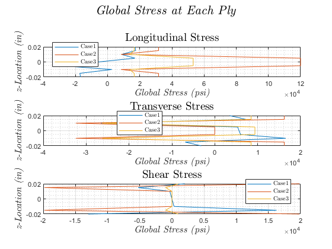
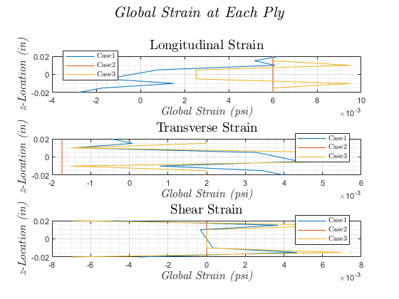

Contents
Final Project Plots
clear; clc; close all
Reading Excel Data
fileNames = {'case1.xlsx', 'case2.xlsx', 'case3.xlsx'};
stressStrainType = {'Longitudinal', 'Transverse', 'Shear'};
data = cell(1, 3);
for ii = 1:length(fileNames)
data{ii} = readcell(fileNames{ii});
end
Plots
figure(1)
for ii = 1:3
for jj = 1:length(fileNames)
subplot(3, 1, jj)
plot(cell2mat(data{1, ii}(13 + jj, 2:end)), ...
cell2mat(data{1, ii}(6, 2:end)), 'DisplayName', ...
strcat('Case ', num2str(ii)));
hold on
grid on
grid minor
titleText = strcat(stressStrainType{jj}, ' Stress');
xlabel('\emph {Global Stress (psi)}','fontsize',12, ...
'Interpreter', 'latex');
ylabel('\emph {z-Location (in)}','fontsize',12,'Interpreter', ...
'latex');
title(titleText,'fontsize',14,'Interpreter',...
'latex')
legend('location', 'Best', 'Interpreter', 'latex')
end
end
sgtitle('\emph {Global Stress at Each Ply}', 'fontsize', 16, ...
'Interpreter', 'latex')
figure(2)
for ii = 1:3
for jj = 1:length(fileNames)
subplot(3, 1, jj)
plot(cell2mat(data{1, ii}(18 + jj, 2:end)), ...
cell2mat(data{1, ii}(6, 2:end)), 'DisplayName', ...
strcat('Case ', num2str(ii)));
hold on
grid on
grid minor
titleText = strcat(stressStrainType{jj}, ' Strain');
xlabel('\emph {Global Strain (psi)}','fontsize',12, ...
'Interpreter', 'latex');
ylabel('\emph {z-Location (in)}','fontsize',12,'Interpreter', ...
'latex');
title(titleText,'fontsize',14,'Interpreter',...
'latex')
legend('location', 'Best', 'Interpreter', 'latex')
end
end
sgtitle('\emph {Global Strain at Each Ply}', 'fontsize', 16, ...
'Interpreter', 'latex')
 